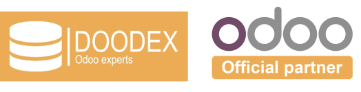
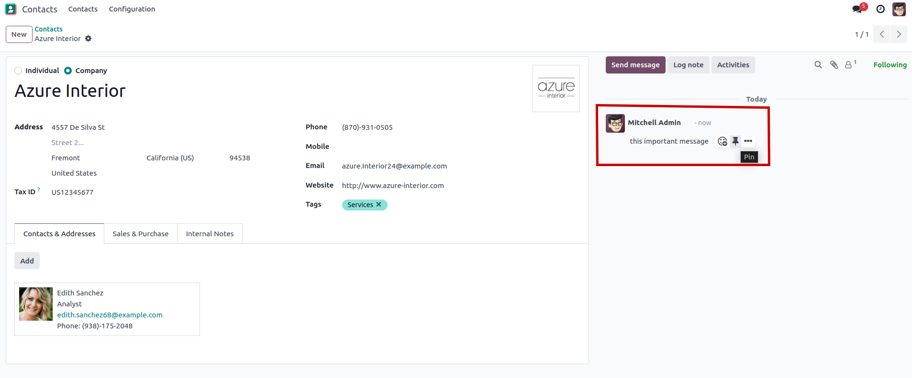
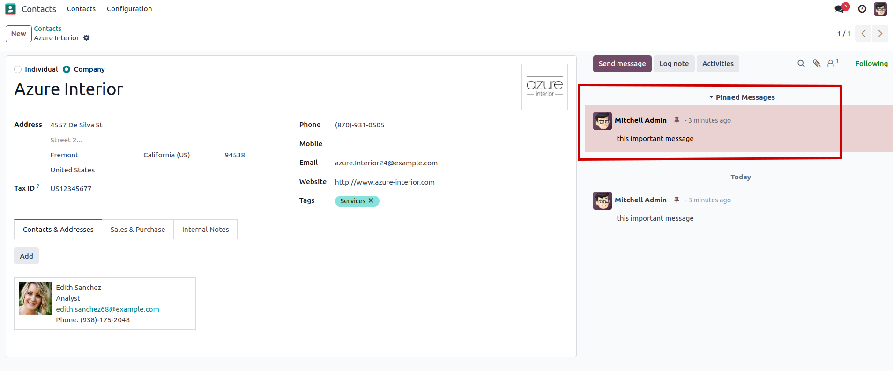
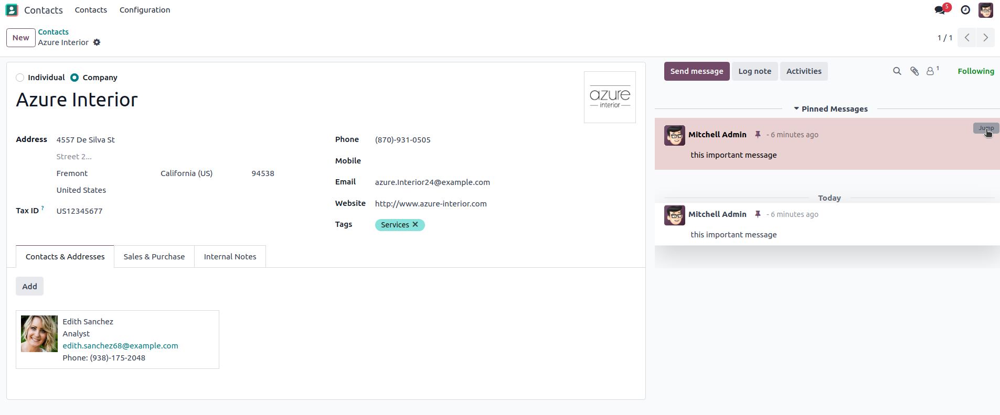

This module is used to pin important messages in the chatter in Odoo.
This module allows users to pin important messages in the chatter of Odoo, helping highlight and preserve key information within a record's communication history. In addition to pinning, users can also easily view all pinned messages in a dedicated section, making it easier to access and reference crucial discussions without having to scroll through the entire message thread. This improves collaboration, traceability, and efficiency in managing communication in Odoo.



For how to use this module you can go to here
Odoo version: 17.0
This module is licensed under LGPLv3 licensed.
Welcome to Doodex: Your Partner in Tailor-Made Odoo Solutions
At Doodex, we believe that every business is unique, with its own set of challenges and opportunities. That’s why we specialize in delivering customized Odoo solutions tailored to meet the specific needs of your organization. Our expertise in Python development and deep understanding of the Odoo platform enable us to provide unparalleled services that drive efficiency, enhance productivity, and support your business growth.
Doodex is a leading provider of business management solutions built on the Odoo framework. With a focus on customization and flexibility, we offer a wide range of services designed to optimize your business processes. Our team of experienced developers and consultants work closely with you to understand your requirements and deliver solutions that are perfectly aligned with your business goals.
If you are looking for a partner who can provide customized Odoo solutions tailored to your business needs, look no further than Doodex. Visit our website at www.doodex.net to learn more about our services and how we can help you achieve your business objectives.
Get a free audit here.
If you have any questions or need further information, feel free to reach out to us.
Email Us